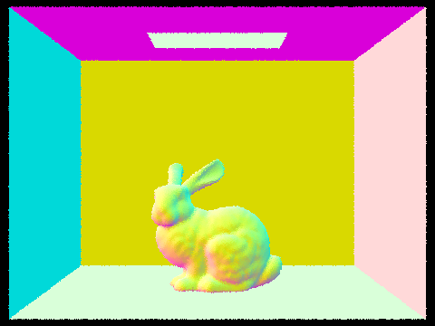
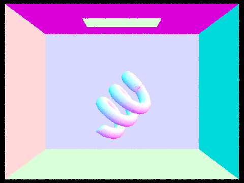
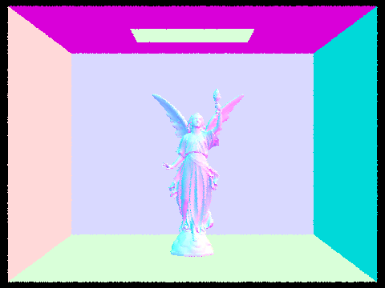
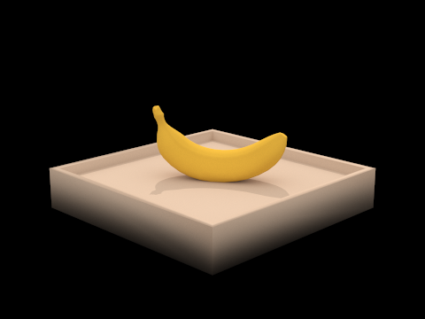
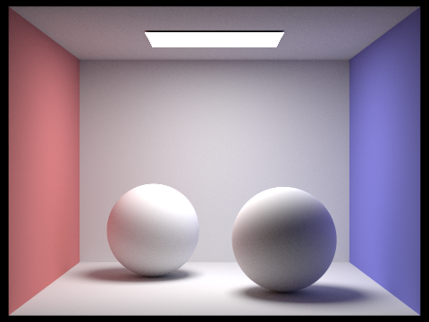

Project 3-1: Pathtracer
Part 1: Ray Generation and Scene Intersection
Abdul Ali Khan, Zachary Zollman
Overview
The project involves implementing a simple path tracer that can render 3D scenes with diffuse and specular surfaces, using techniques like Monte Carlo integration and importance sampling to generate accurate estimates of the radiance in the scene. The project is divided into several parts, each building on the previous one. In Part 1, we implement a basic ray tracer that can render simple 3D scenes with point lights and diffuse surfaces. We implement classes for Ray, Camera, and Primitive (which includes classes for Sphere and Triangle), and add support for computing the intersection between a ray and a primitive.Part 1: Bezier Curves with 1D de Casteljau Subdivision
Walk through the ray generation and primitive intersection parts of the rendering pipeline.
The rendering pipeline starts with the generation of a camera ray for each pixel in the image. For each pixel, the raytrace_pixel function is called which generates ns_aa camera rays and traces them through the scene. In the generate_ray function of the Camera class, given the pixel coordinates (x, y) as input, the position of the input sensor sample coordinate on the canonical sensor plane one unit away from the pinhole is computed. The pinhole camera model is used to map the 2D pixel coordinates onto a 3D ray direction. The ray direction is computed by finding the coordinates on the canonical plane and the transforming from camera space to world space. In the raytrace_pixel function of the PathTracer class, ns_aa camera rays are generated and traced through the scene. For each sample, a random offset is added to the pixel coordinates to generate a different camera ray. The generated ray is then passed to the est_radiance_global_illumination function which traces the ray through the scene and computes the radiance at the intersection point. The computed radiance value is accumulated in the c vector. After all the samples are processed, the accumulated radiance values are averaged by dividing by the number of samples, and the resulting color is written to the sample buffer using the update_pixel function of the SampleBuffer class.
Ray Camera::generate_ray(double x, double y) const {
// TODO (Part 1.1):
// compute position of the input sensor sample coordinate on the
// canonical sensor plane one unit away from the pinhole.
// Note: hFov and vFov are in degrees.
double x_normalized = (x - 0.5) * 2;
double y_normalized = (y - 0.5) * 2;
double x_ = tan(radians(hFov / 2)) * x_normalized;
double y_ = tan(radians(vFov / 2)) * y_normalized;
Vector3D vec = c2w * Vector3D(x_, y_, -1);
double min_t = nClip;
double max_t = fClip;
Ray r = Ray(pos, vec);
r.min_t = min_t;
r.max_t = max_t;
return r;
}
void PathTracer::raytrace_pixel(size_t x, size_t y) {
// TODO (Part 1.2):
// Make a loop that generates num_samples camera rays and traces them
// through the scene. Return the average Vector3D.
// You should call est_radiance_global_illumination in this function.
int samples = ns_aa;
Vector2D pixel_origin = Vector2D(x, y);
Vector3D c = Vector3D(0, 0, 0);
for (int i = 0; i < samples; i++){
Vector2D sample = gridSampler->get_sample();
sample.x += pixel_origin.x;
sample.y += pixel_origin.y;
double x_ = sample.x/sampleBuffer.w;
double y_ = sample.y/sampleBuffer.h;
Ray ray = camera->generate_ray(x_, y_);
c += est_radiance_global_illumination(ray);
}
Vector3D c_ = c/samples;
sampleBuffer.update_pixel(c_, x, y);
}
Explain the triangle intersection algorithm you implemented in your own words.
The triangle intersection algorithm uses Möller-Trumbore to determine whether a given ray intersects with a triangle in 3D space, and if so, calculates the intersection point and normal vector. First calculate two vectors from the vertices of the triangle, and a third vector from the origin of the ray to one of the triangle vertices. The algorithm then calculates the barycentric coordinates of the intersection point. These coordinates are used to interpolate the normal vector at the intersection point by taking a weighted sum of the normals at the three vertices of the triangle. The intersection point and normal vector are then stored in an Intersection object. There are also checks to make sure the determinant of the matrix is not negative and that the intersection point is within the valid range of the ray's parameters and that barycentric coordinates are within [0,1].
bool Triangle::has_intersection(const Ray &r) const
{
// Part 1, Task 3: implement ray-triangle intersection
// The difference between this function and the next function is that the next
// function records the "intersection" while this function only tests whether
// there is a intersection.
Vector3D e1 = p2 - p1;
Vector3D e2 = p3 - p1;
Vector3D s = r.o - p1;
Vector3D s1 = cross(r.d, e2);
Vector3D s2 = cross(s, e1);
double div = dot(s1, e1);
double t = dot(s2, e2) / div;
double b1 = dot(s1, s) / div;
double b2 = dot(s2, r.d) / div;
double b3 = 1 - b1 - b2;
if (div == 0)
return false;
if (t < r.min_t || t > r.max_t)
return false;
if (b1 < 0 || b1 > 1)
return false;
if (b2 < 0 || b2 > 1)
return false;
if (b3 < 0 || b3 > 1)
return false;
return true;
}
bool Triangle::intersect(const Ray &r, Intersection *isect) const
{
// Part 1, Task 3:
// implement ray-triangle intersection. When an intersection takes
// place, the Intersection data should be updated accordingly
Vector3D e1 = p2 - p1;
Vector3D e2 = p3 - p1;
Vector3D s = r.o - p1;
Vector3D s1 = cross(r.d, e2);
Vector3D s2 = cross(s, e1);
double div = dot(s1, e1);
double t = dot(s2, e2) / div;
double b1 = dot(s1, s) / div;
double b2 = dot(s2, r.d) / div;
double b3 = 1 - b1 - b2;
if (div == 0)
return false;
if (t < r.min_t || t > r.max_t)
return false;
if (b1 < 0 || b1 > 1)
return false;
if (b2 < 0 || b2 > 1)
return false;
if (b3 < 0 || b3 > 1)
return false;
isect->t = t;
r.max_t = t;
isect->primitive = this;
isect->bsdf = get_bsdf();
isect->n = b1 * n1 + b2 * n2 + b3 * n3;
return true;
}
Show images with normal shading for a few small .dae files.



Part 2: Bounding Volume Hierarchy
Part 3: Direct Illumination
Part 4: Global Illumination
Images rendered with global (direct and indirect) illumination at 1024 samples per pixel.

